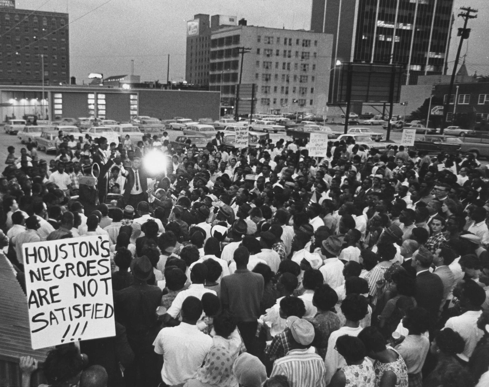

Public Discrimination
During the Civil Rights Movement, African Americans faced discrimination and segregation in public spaces such as restaurants, schools, and public transportation. They were often denied access to these spaces based on the color of their skin, leading to a lack of basic rights and freedoms.
- Gail Etienne Stripling was one of the New Orleans Four and was instrumental in desegregating public schools in Louisiana
- Gail Etienne Stripling recounts her experience of her first day at a public school in an interview and states "I just felt that if they could get to me, they’d want to kill me"(Stripling)
- Peter Irons wrote a book called "Jim Crow's Schools" in which he describes the abysmally low educational status of Blacks in the Jim Crow states in 1950 (Irons)
- Black schools were underfunded, understaffed, and provided an inferior education compared to white schools
- Black adults had completed an average of only 4.8 to 5.1 years of schooling, compared to four of 10 whites who had earned their high school diploma
- Leading Black educators at the time attributed the inferior black schools to racial segregation.
(McGee)
- In an article by Gerald Rosenberg, he explains “Although the majestic guarantee of equal protection was enshrined in the Civil Rights Act, it took nearly another century before all three branches of government were willing to act in a meaningful way to enforce it” (Unbound and Rosenberg).
- This suggests that the fight against discrimination was a long and difficult one, spanning several generations.
Why was this a frontier?
This was a significant breakthrough for African Americans who had been fighting for equal rights and access to public accommodations for decades. The Act allowed them to freely access public spaces, and it was a major step towards creating a more equitable society.